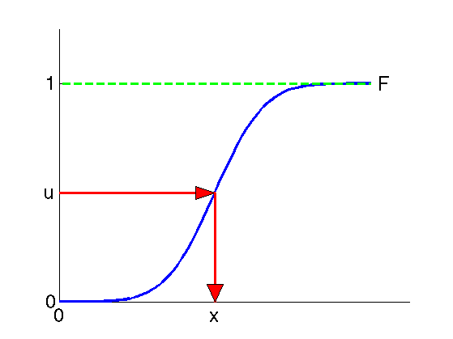

function sampleCdf
x = randn([1,100000]);
y = -4:0.1:4;
cdf = zeros(size(y));
u = 0;
for k = 1 : length(y)
cdf(k) = sum(x < y(k));
if ((cdf(k) > 0.5*length(x)) && (u == 0))
u = k;
end
end
figure(1); clf; hold on;
plot(y, cdf, '-b', 'LineWidth', 3);
plot([min(y),max(y)], [length(x),length(x)], '--g', 'LineWidth', 3);
plot([min(y),y(u)], [0.5*length(x),0.5*length(x)], '-r', 'LineWidth', 3);
fill([y(u),y(u)-0.5,y(u)-0.5], [0.5*length(x),0.5*length(x)+3000,0.5*length(x)-3000], 'r');
plot([y(u),y(u)], [0.5*length(x),0], '-r', 'LineWidth', 3);
fill([y(u),y(u)-0.2,y(u)+0.2],[0,8000,8000], 'r');
text(max(y)+0.2,length(x), 'F', 'FontSize', 24, 'FontWeight', 'bold');
ylim([0, 1.25*length(x)]);
xlim([min(y), max(y)+1]);
set(gca, 'FontSize', 24, 'FontWeight', 'bold');
set(gca, 'YTick', [0, 0.5*length(x), length(x)], 'YTickLabel', {'0', 'u', '1'});
set(gca, 'XTick', [min(y), y(u)], 'XTickLabel', {'0', 'x'});
hold off;
end
